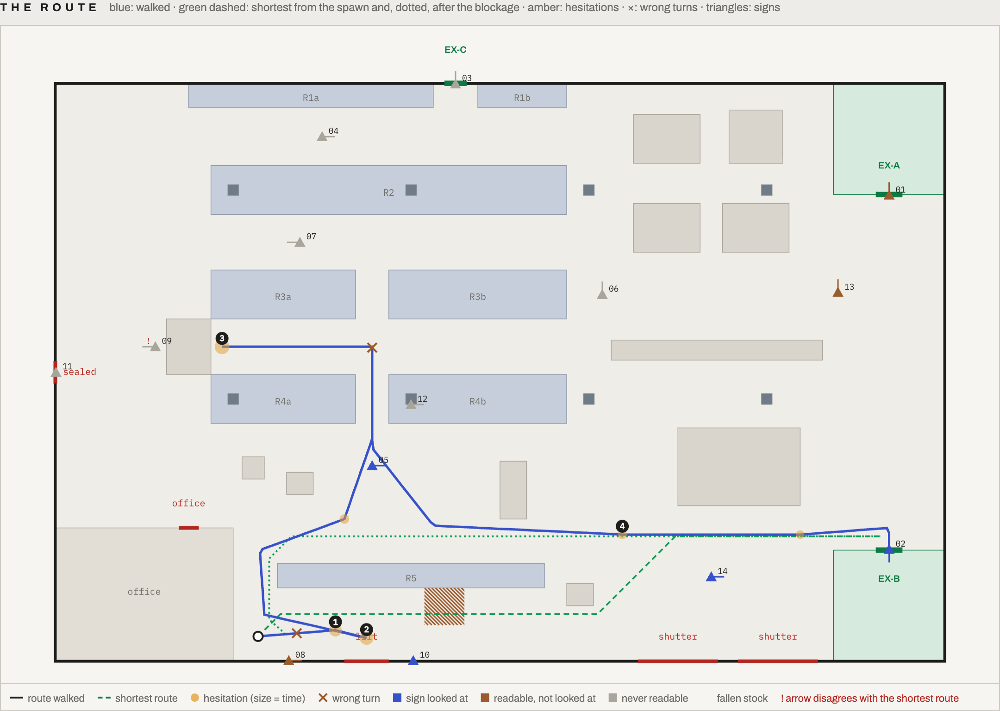

Factory egress · one run, decoded

Out in 1:02
by Stair B, after the aisle was blocked
56% efficient
82 m walked against a best possible 46 m
3 wrong turns
37 m of detours, 11 s inside the dead end
1 wrong door
tried the goods lift during the power cut
Visual Vibes · factory egress · one scripted demo run